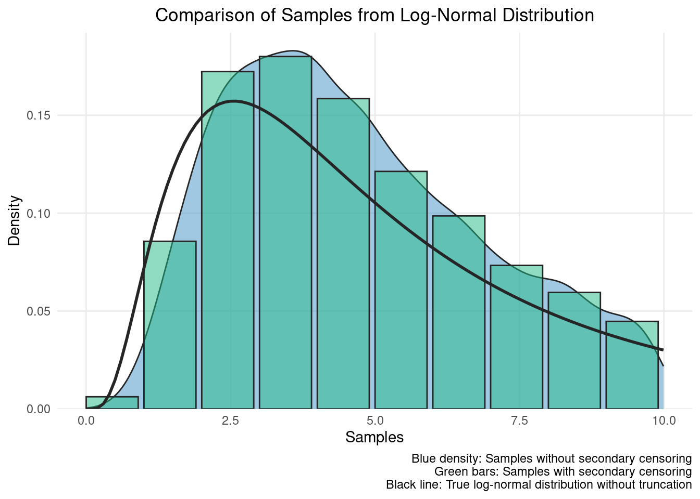
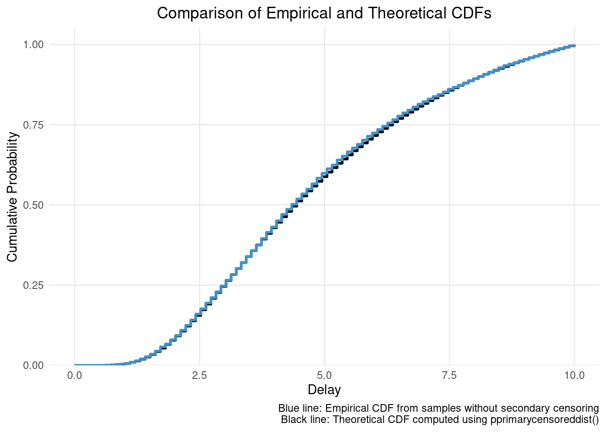
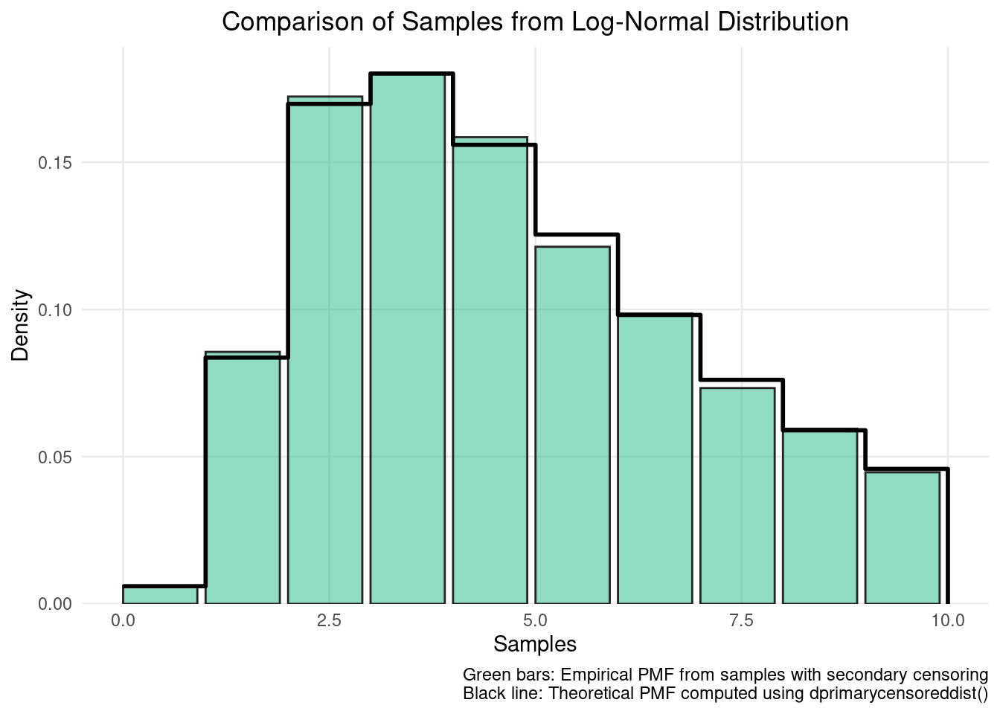

Getting Started with primarycensoreddist
Sam Abbott
Source:vignettes/primarycensoreddist.Rmd
primarycensoreddist.Rmd1 Introduction
Delay distributions play a crucial role in various fields, including epidemiology, reliability analysis, and survival analysis. These distributions describe the time between two events of interest, such as the incubation period of a disease or the time to failure of a component. Accurately estimating and calculating these distributions is essential for understanding the underlying processes and making informed decisions[1]. However, estimating these distributions can be challenging due to various factors, including censoring and truncation of the observed data[2].
The estimation of delay distributions often faces the following challenges:
Primary event censoring: The primary event (e.g., exposure to a pathogen or the start of a process) is often observed with some degree of interval censoring. This means that the exact time of the event is not known, but rather, it is known to have occurred within a certain time interval, commonly a day. As a result, any distribution based on these primary events is a combination of the underlying true distribution and the censoring distribution.
Truncation: The observation of delay distributions is often conditioned on the occurrence of the secondary event. This leads to a truncation of the observed distribution, as delays longer than the observation time are not captured in the data. Consequently, the observed distribution is a combination of the underlying true distribution, the censoring distribution, and the observation time.
Secondary event censoring: The secondary event (e.g., symptom onset or the end of a process) is also frequently observed with interval censoring. This additional layer of censoring further complicates the estimation of the delay distribution.
The primarycensoreddist package aims to address these challenges by providing tools to manipulate primary censored delay distributions. By accounting for the censoring and truncation present in the data, the package enables more accurate estimation and use of the underlying true distribution.
In this vignette, we will provide a quick introduction to the main functions and concepts in the primarycensoreddist package. We will cover the mathematical formulation of the problem, demonstrate the usage of the key functions, and provide signposting on how to learn more.
2 Packages in this getting started vignette.
As well as the primarycensoreddist package this vignette also uses ggplot2.
# Load packages
library(primarycensoreddist)
library(ggplot2)
# Set seed for reproducibility
set.seed(123)
3 Generating Random Samples with rprimarycensoreddist()
This function generates random samples from a primary event censored distribution. It adjusts the distribution by accounting for the primary event distribution, potential truncation at a maximum delay (D), and secondary event censoring.
The mathematical formulation for generating random samples from a primary event censored distribution is as follows:
- Generate primary event times (\(p\)) from the specified primary event distribution (\(f_p\)) within the primary event window (\(pwindow\)):
\[p \sim f_p(x), \quad 0 \leq x \leq pwindow\]
- Generate delays (\(d\)) from the specified delay distribution (\(f_d\)) with parameters \(\theta\):
\[d \sim f_d(x; \theta)\]
- Calculate the total delays (\(t\)) by adding the primary event times and the delays:
\[t = p + d\]
- Round the total delays to the nearest secondary event window (\(swindow\)):
\[t_{rounded} = \lfloor \frac{t}{swindow} \rfloor \times swindow\]
- Apply truncation to ensure that the delays are within the specified range \([0, D]\):
\[t_{valid} = \{t_{rounded} \mid 0 \leq t_{rounded} < D\}\]
Here’s an example of how to use rprimarycensoreddist() to sample from a log-normal distribution with and without secondary interval censoring. For simplicity we will use a daily secondary censoring window for both events.
n <- 1e4
meanlog <- 1.5
sdlog <- 0.75
obs_time <- 10
pwindow <- 1
# Random samples without secondary censoring
samples <- rprimarycensoreddist(
n, rlnorm,
meanlog = meanlog, sdlog = sdlog,
pwindow = pwindow, swindow = 0, D = obs_time
)
# Random samples with secondary censoring
samples_sc <- rprimarycensoreddist(
n, rlnorm,
meanlog = meanlog, sdlog = sdlog,
pwindow = pwindow, swindow = 1, D = obs_time
)
# Calculate the PMF for the samples with secondary censoring
samples_sc_pmf <- data.frame(
pmf =
table(samples_sc) /
sum(table(samples_sc))
)
# Compare the samples with and without secondary censoring to the true
# distribution
ggplot() +
geom_density(
data = data.frame(samples = samples),
aes(x = samples),
fill = "#4292C6",
col = "#252525",
alpha = 0.5
) +
geom_col(
data = samples_sc_pmf,
aes(
x = as.numeric(as.character(pmf.samples_sc)),
y = pmf.Freq
),
fill = "#20b986",
col = "#252525",
alpha = 0.5,
width = 0.9,
just = 0
) +
geom_function(
fun = dlnorm,
args = list(meanlog = meanlog, sdlog = sdlog),
color = "#252525",
linewidth = 1
) +
labs(
title = "Comparison of Samples from Log-Normal Distribution",
x = "Samples",
y = "Density",
caption = paste0(
"Blue density: Samples without secondary censoring\n",
"Green bars: Samples with secondary censoring\n",
"Black line: True log-normal distribution without truncation"
)
) +
scale_y_continuous(expand = expansion(mult = c(0, 0.05))) +
theme_minimal() +
theme(
panel.grid.minor = element_blank(),
plot.title = element_text(hjust = 0.5)
)
Neither distribution matches the true distribution due to the truncation at D which biases both observed distributions towards shorter delays and the primary and secondary event censoring.
4 Compute the primary event censored cumulative distribution function (CDF) for delays with pprimarycensoreddist()
This function computes the primary event censored cumulative distribution function (CDF) for a given set of quantiles. It adjusts the CDF of delay distribution by accounting for the primary event distribution and potential truncation at a maximum delay (D).
The primary event censored CDF, (\(F_{\text{cens}}(q)\)), is given by:
\[ F_{\text{cens}}(q) = \int_{0}^{pwindow} F(q - p) \cdot f_{\text{primary}}(p) \, dp \]
where (\(F\)) is the CDF of the primary event distribution, (\(f_{\text{primary}}\)) is the PDF of the primary event times, and (\(pwindow\)) is the primary event window.
If the maximum delay (\(D\)) is finite, the CDF is normalized by (\(F(D)\)):
\[ F_{\text{cens}}(q) = \int_{0}^{pwindow} \frac{F(q - p)}{F(D - p)} \cdot f_{\text{primary}}(p) \, dp \]
Let’s compare the empirical CDF of our samples without secondary censoring to the theoretical CDF computed using pprimarycensoreddist():
empirical_cdf <- ecdf(samples)
theoretical_cdf <- pprimarycensoreddist(
seq(0, obs_time, length.out = 100),
plnorm,
meanlog = meanlog, sdlog = sdlog,
pwindow = pwindow, D = obs_time
)
# Create a data frame for plotting
cdf_data <- data.frame(
x = seq(0, obs_time, length.out = 100),
Theoretical = theoretical_cdf,
Empirical = empirical_cdf(seq(0, obs_time, length.out = 100))
)
# Plot the empirical and theoretical CDFs
ggplot(cdf_data, aes(x = x)) +
geom_step(aes(y = Theoretical), color = "black", linewidth = 1) +
geom_step(aes(y = Empirical), color = "#4292C6", linewidth = 1) +
labs(
title = "Comparison of Empirical and Theoretical CDFs",
x = "Delay",
y = "Cumulative Probability",
caption = paste0(
"Blue line: Empirical CDF from samples without secondary censoring\n",
"Black line: Theoretical CDF computed using pprimarycensoreddist()"
)
) +
scale_y_continuous(expand = expansion(mult = c(0, 0.05))) +
theme_minimal() +
theme(
panel.grid.minor = element_blank(),
plot.title = element_text(hjust = 0.5)
)
The theoretical CDF matches the empirical CDF very well, confirming that pprimarycensoreddist() is working as expected.
5 Compute the primary event censored probability mass function (PMF)with dprimarycensoreddist()
This function computes the primary event censored probability mass function (PMF) for a given set of quantiles using the CDF. On top of accounting for the primary event distribution and truncation it also accounts for secondary event censoring.
The primary event censored PMF, (\(f_{\text{cens}}(d)\)), is given by:
\[ f_{\text{cens}}(d) = F_{\text{cens}}(d + \text{swindow}) - F_{\text{cens}}(d) \]
where (\(F_{\text{cens}}\)) is the potentially right truncated primary event censored CDF and (\(\text{swindow}\)) is the secondary event window.
Let’s compare the empirical PMF of our samples with secondary censoring to the theoretical PMF computed using dprimarycensoreddist():
# Calculate the theoretical PMF using dprimarycensoreddist
theoretical_pmf <- dprimarycensoreddist(
0:(obs_time - 1),
plnorm,
meanlog = meanlog, sdlog = sdlog,
pwindow = pwindow, swindow = 1, D = obs_time
)
pmf_df <- data.frame(
x = 0:obs_time,
pmf = c(theoretical_pmf, 0)
)
# Plot the empirical and theoretical PMFs
ggplot() +
geom_col(
data = samples_sc_pmf,
aes(
x = as.numeric(as.character(pmf.samples_sc)),
y = pmf.Freq
),
fill = "#20b986",
col = "#252525",
alpha = 0.5,
width = 0.9,
just = 0
) +
geom_step(
data = pmf_df,
aes(x = x, y = pmf),
color = "black",
linewidth = 1
) +
labs(
title = "Comparison of Samples from Log-Normal Distribution",
x = "Samples",
y = "Density",
caption = paste0(
"Green bars: Empirical PMF from samples with secondary censoring\n",
"Black line: Theoretical PMF computed using dprimarycensoreddist()"
)
) +
scale_y_continuous(expand = expansion(mult = c(0, 0.05))) +
theme_minimal() +
theme(
panel.grid.minor = element_blank(),
plot.title = element_text(hjust = 0.5)
)
Again the theoretical PMF matches the empirical PMF very well, confirming that dprimarycensoreddist() is also working as expected.
6 Other key functionality
In addition to these main functions, the package also includes:
Primary event distributions: The package includes commonly used primary event distributions such as exponential growth.
Stan versions of all functions and R functions to interface with Stan: All R functions have a corresponding Stan function. These Stan functions are used in the estimation of delay distributions using the Stan software. The package also includes tools to manipulate the Stan code in R.
7 Learning more
- For more on
primarycensoreddistsee the other package vignettes and the function documentation. - For more methodological background on delay distributions see Park et al.[2].
- For advice on best practices when estimating or handling delay distributions see Charniga et al.[1].